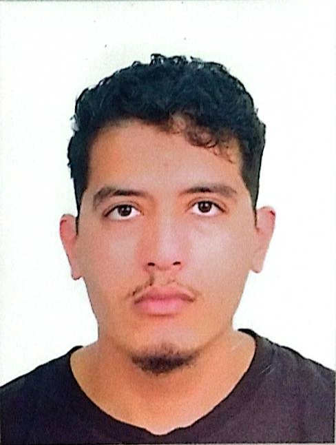

Étudiant SINF2 - FSSM | Futur développeur de jeux vidéo
Je suis étudiant en deuxième année SINF2 à la fssm et je m'intéresse beaucoup à l'informatique, surtout au développement de jeux vidéo.mon parcours n'a pas été simple,j'ai commencé à l'ensa agadir mais à cause de problèmes administratifs et personnels j'ai perdu du temps, ce qui m'a obligé à recommencer et changer d'établissement.aujourd'hui je suis plus motivé que jamais pour avancer et réussir dans ce domaine. j'ai de bonnes bases en programmation,surtout en langage c et en structures de données, et je continue à progresser en développement web avec html,css et javascript. en dehors des études,je suis un grand fan de jeux vidéo,c'est ce qui m'a donné envie de devenir développeur.j'aime aussi le sport,surtout le football,et je pratiquais la natation et le surf quand j'étais à agadir.
HTML
CSS
JavaScript
C / DS
2022 : Bac
2023 - 2025 : ENSA Agadir
2026 : FSSM SINF2